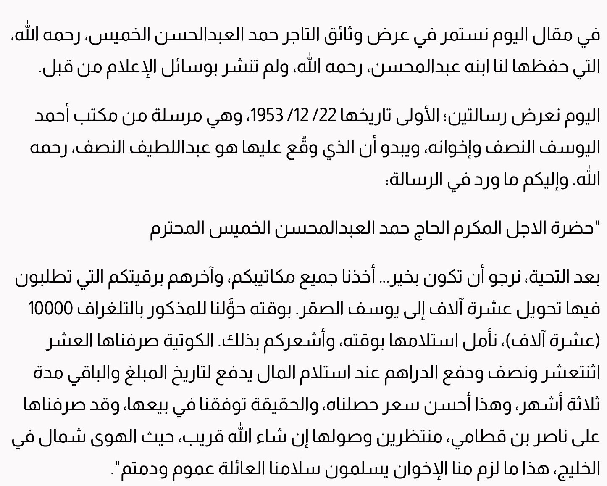

٢٢ ديسمبر ١٩٥٣ · رسالة تجارية، كما نُسخت ونُشرت في جريدة الجريدة
رسالة من أحمد اليوسف النصف وإخوانه: بيع حمولة الكوتية على ناصر بن قطامي
ما هي
يكتب الإخوان النصف في الكويت إلى التاجر حمد العبدالمحسن الخميس الذي كان يورد البضائع من الهند. يؤكدون تحويل عشرة آلاف بالتلغراف إلى يوسف الصقر، ويخبرونه أنهم باعوا حمولة الكوتية على ناصر بن قطامي بسعر اثني عشر ونصف للعشرة، يُدفع جزء عند وصول البضاعة والباقي خلال ثلاثة أشهر. ولم تكن السفينة قد وصلت الكويت بعد، وكانوا ينتظرونها والريح شمال في الخليج العربي.
أهميتها
تُظهر ناصر عبدالوهاب القطامي تاجرا في الكويت عام ١٩٥٣، يشتري حمولة سفينة كاملة من الهند بالأجل.
من المقصود
تذكر الرسالة ناصر بن قطامي فقط، وتعرّفه العائلة بأنه ناصر عبدالوهاب القطامي.
صور الصفحات

النص الأصلي
ملاحظات
نشرت الجريدة هذه الرسالة في ٤ نوفمبر ٢٠١٦ من وثائق التاجر حمد العبدالمحسن الخميس التي حفظها ابنه عبدالمحسن، وتذكر أن الموقع عليها على الأرجح عبداللطيف النصف. ولا تظهر هنا الرسالة الأصلية، بل النص المنشور فقط.
أسماء أخرى
المصادر
منشورة في جريدة الجريدة الكويتية، ٤ نوفمبر ٢٠١٦. ونسخة محفوظة في درايف العائلة.
مرجع الأرشيف
- Al-Jarida, 4 November 2016 · وثائق التاجر حمد العبدالمحسن الخميس
كيف كُتب هذا النص: النص العربي كما نشرته الجريدة. الترجمة الإنجليزية من Claude، يرجى مراجعتها.
افتح في الموقع التفاعلي